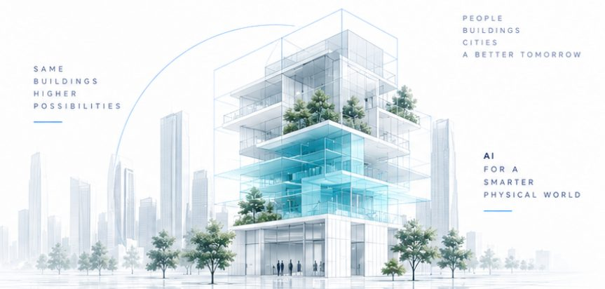

把建築資料、設備與 AI 基礎建設，整合為可營運的建築作業系統。
Aiii VBIM OS 不只管理建築，而是建築、設備、能源與 AI 的共同作業系統：圖說、BIM、工程文件、設備台帳、影像、感測、能源、維修與 AI，都落在同一個空間與資產架構中，夥伴的設備與系統也能透過標準介面接進來。

不是單一軟體，而是把建築資料、感知、設備、AI 運算與管理整合為一個可營運的系統。
2D → 3D BIM → PMIS → Digital Twin → Private AI
這是 Aiii VBIM 與傳統 BIM 最大的差異：模型不在完工後封存，而是持續進入驗收、交付、物業與設備管理，成為長期可用的數位資產。
把分散在業主、建築師、工程顧問、營造、監造驗收與物業端的資訊，拉回同一個平台。
One Project · One Platform · One Version of Truth
整合影像、文件、數位孿生與上鏈，從現場到資料追溯都可視、可追蹤、可延續。
Aiii VBIM 不只管理空間，更管理時間。當人、物、空間、設備、管線、工程清單與進度全部數位化，系統不只告訴你「現在發生什麼」，更能提前看見「接下來會發生什麼」。
| 類型 | 強項 | 常見限制 | Aiii VBIM 的差異 |
|---|---|---|---|
| {{r.t}} | {{r.s}} | {{r.l}} | {{r.v}} |